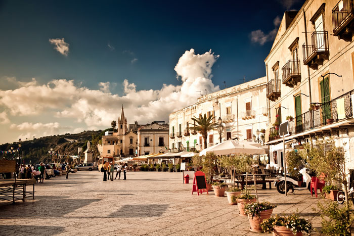

Aside from being the name of a sauce made from reduced wine, Marsala is a prominent city in Italy.
The heart of Marsala is the piazza in front of the town's Duomo, which is dedicated to St. Thomas a Becket. This square, called Piazza della Repubblica or Piazza Loggia, is a pleasant place for a promenade or refreshments at the cafe opposite the cathedral. The Duomo has had an unlucky career, being rebuilt several times on its original Norman foundations. After a seventeenth-century reconstruction, the building collapsed in the nineteenth century, was restored, then was severely damaged again in Second World War bombing. The final touches were put to the facade in the 1950s.
You'll see other restorations of historic buildings in Marsala, many carried out recently. A few buildings have been re-interpreted with a bold modernist style setting off their surviving original features, to mixed success. Look out for the fabulous lion's head over the gateway through which Garibaldi led his men, now called the Porta Garibaldi. Other fine palazzi and ornate balconies dot the long narrow streets of the town centre. One of the most elegant buildings is the town hall, alongside the Duomo. Marsala Visitors interested in the local wine will find various bars and enoteche (wine bars/shops) where Marsala can be sampled and purchased. Look out for the world 'baglio', used for the local cellars and HQs of wine production. Several of these can be visited, and for drivers, the area has created a 'wine-road' for tourists, the Strada del Vino Marsala, connecting wine-producers who offer guided tours and tastings. Note that Marsala is strong stuff. In addition to the important archaeological museum, described below, Marsala also has a couple of other museums: the Museo Civico and the Museo degli Arazzi Fiamminghi, a museum containing some sixteenth-century Flemish tapestries.
